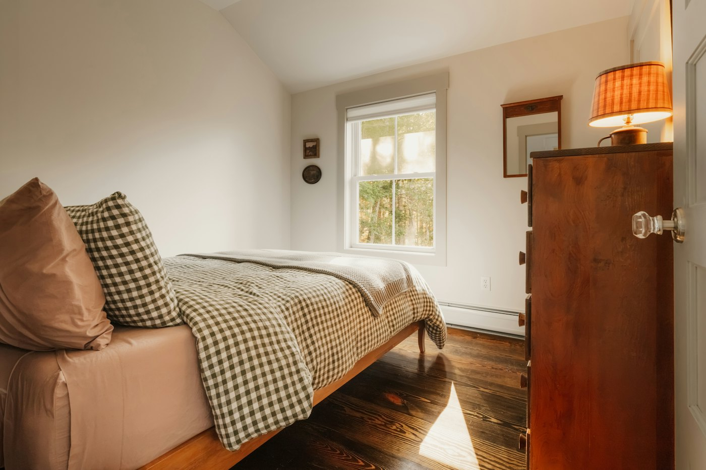
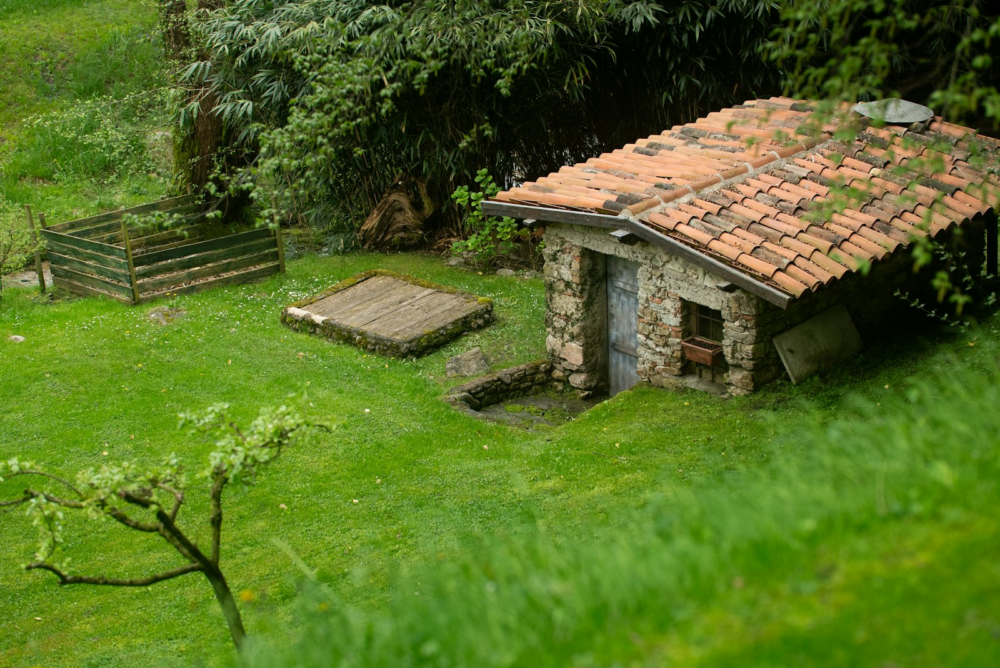

Il Noce
La camera più grande, al primo piano. La finestra dà sul cortile e sull'albero che dà il nome alla casa.
Due persone, più una culla su richiesta. Bagno in camera.Un B&B di famiglia in una casa di pietra, con l'orto, il noce in cortile e la colazione fatta con quello che c'è in stagione.
Chiedete se c'è postoTorta fatta in casa, marmellate dell'orto, uova delle galline del vicino. Chi parte presto trova il caffè già pronto.
Si scende per la strada bianca tra i filari. Il giovedì c'è il mercato, e il forno finisce le focacce prima di mezzogiorno.
Le panche sotto l'albero guardano a ovest. Il sabato l'aperitivo lo offre la casa.
Nessuna strada vicina, nessun lampione. Le camere hanno gli scuri di legno: la mattina, la luce la decidete voi.
Una casa colonica dei primi del Novecento, rimessa a posto piano piano. Tre camere, ognuna con il suo bagno; la cucina grande resta aperta per un tè a qualsiasi ora.

La camera più grande, al primo piano. La finestra dà sul cortile e sull'albero che dà il nome alla casa.
Due persone, più una culla su richiesta. Bagno in camera.
Sotto il tetto, dove una volta si teneva il fieno. Le travi sono a vista e sopra il letto c'è un lucernario.
Due persone. Bagno in camera.
Una stanza a parte, in fondo all'orto. Per chi vuole svegliarsi con la porta sul prato.
Due persone. Bagno in camera, ingresso indipendente.